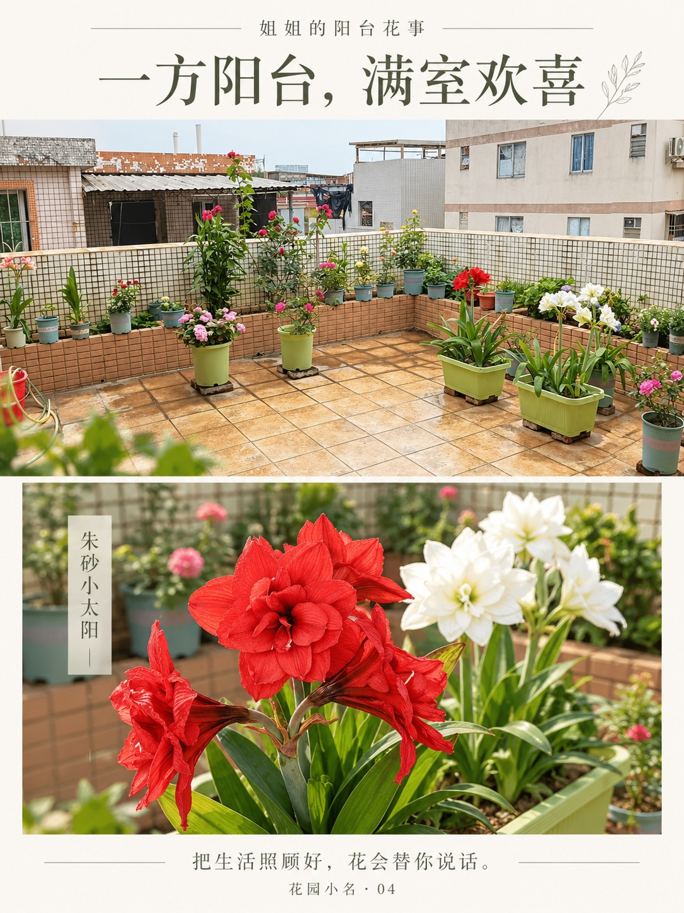

微信里怎么保存？
点开一张图片或表情，长按大图，使用微信显示的保存选项。GIF请保存原文件，截图不会动。
如果长按没有保存选项，点“打开原图”，或通过微信右上角菜单在浏览器中打开后下载。不同手机的菜单名称可能不同。
把生活照顾好，花会替你说话。
收藏花开的样子，也把花花送进聊天里。

点开一张图片或表情，长按大图，使用微信显示的保存选项。GIF请保存原文件，截图不会动。
如果长按没有保存选项，点“打开原图”，或通过微信右上角菜单在浏览器中打开后下载。不同手机的菜单名称可能不同。